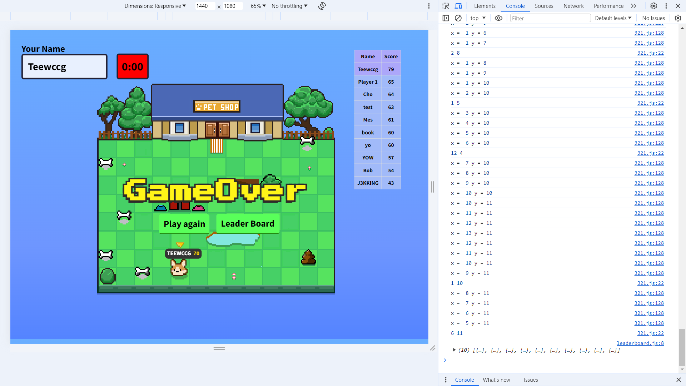

Sawandee kub!!My name is Naytipat Phothipan but You can call me nine. Enthusiastic Computer Engineering student looking for an internship in data analysis, data engineering, cloud, or networking. Interested in turning data into meaningful insights, building efficient data pipelines, and gaining hands-on experience with cloud infrastructure and network systems. I’m eager to learn, contribute to real-world projects, and grow my skills in Python, SQL, Excel, cloud platforms, and networking technologies. If a data engineering role is unavailable, I am fully open and ready to explore other opportunities in related fields.
Currently pursuing a Bachelor of Engineering in Computer Engineering at Chulalongkorn University, expected graduation in 2027.
Mitsubishi Electric Kang Yong Watana - Intern
26/05/2025 - 4/08/2025
Developed a browser-based game using HTML, CSS, and JavaScript as part of a team project in the Computer Engineering Essentials course. My contribution focused on creating a dynamic TOP 10 leaderboard by integrating MongoDB to store and retrieve player scores and displaying them on the website.
Set up a private cloud storage solution using Nextcloud on a Raspberry Pi, allowing secure file sharing and access across devices.
Email: NaytipatP@gmail.com